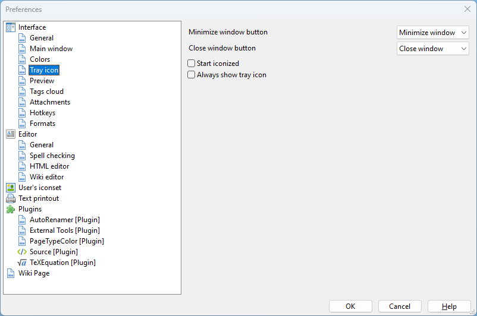

Interface - Tray icon

The settings in this section allow you to select behavior for the program icon in system tray (area with icons near the clock in Windows).
If the Minimize to tray check-box is selected, clicking the "Minimize" button results in disappearance of the program button from the taskbar and appearance of the corresponding ison in the tray. This may come in handy if there is a need to have more free place on the taskbar.
The Start iconized check-box selection forces OutWiker to start minimized with icon in the systray and no taskbar button. This may come in handy if OutWiker is added to the list of programs to autorun upon OS booting.
If the Always show tray icon check-box is selected, then the systray icon is shown always, not just when the program is minimized.
If the Minimize on close window check-box is selected, then OutWiker does not close when the "Close" button is clicked, but minimized in stead. To close OutWiker, go to File - Exit....